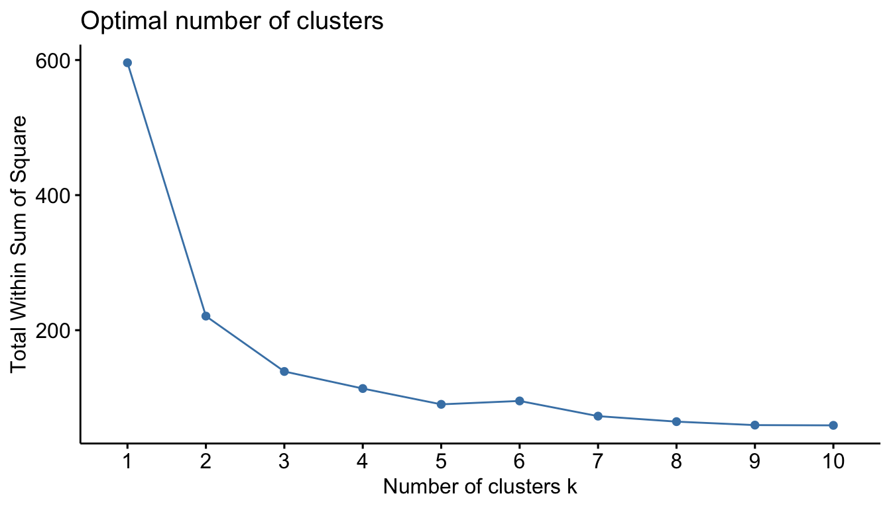
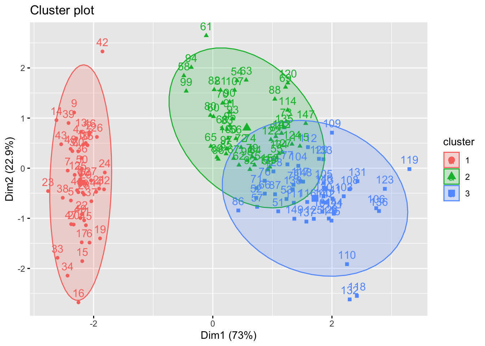
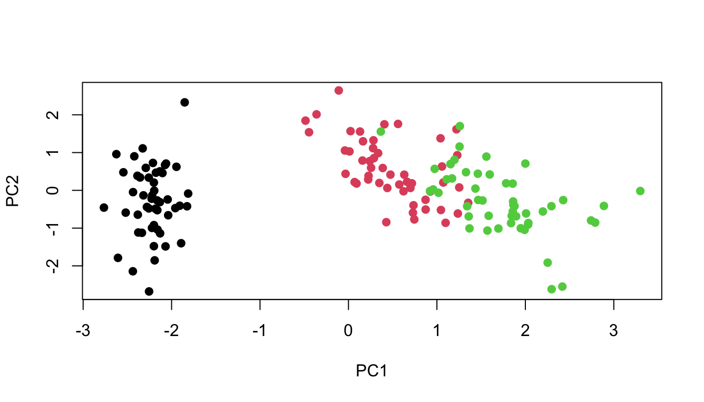
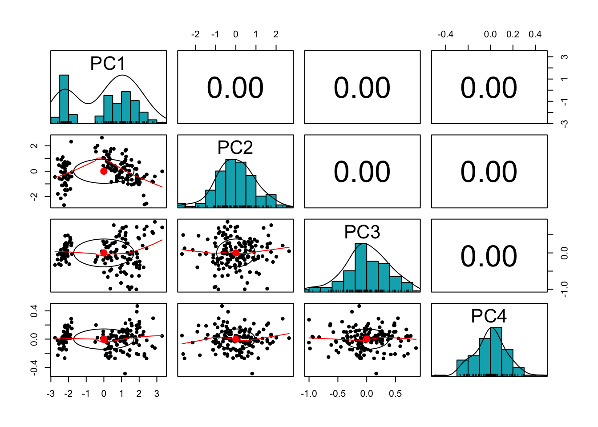
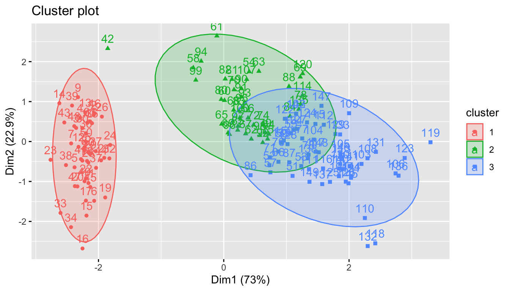
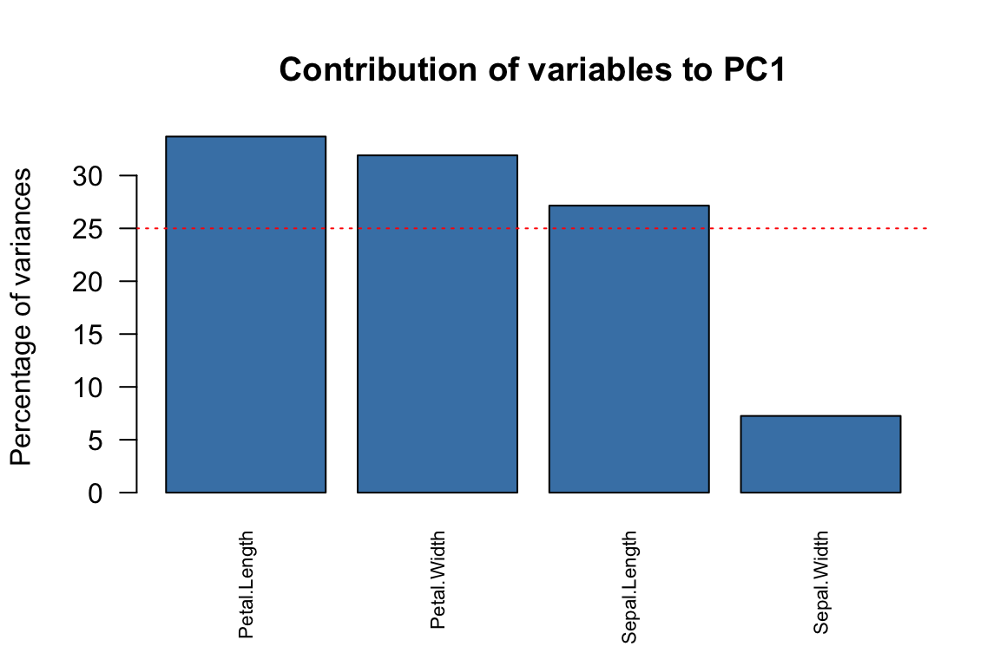
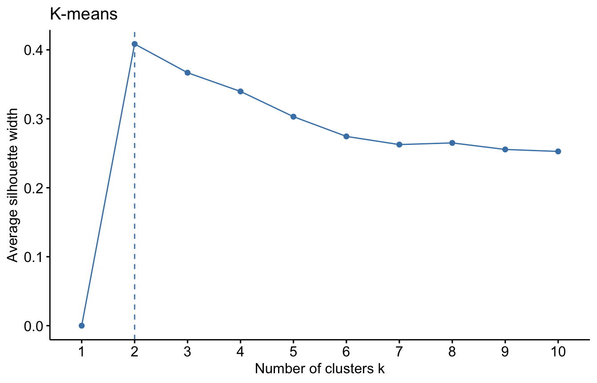
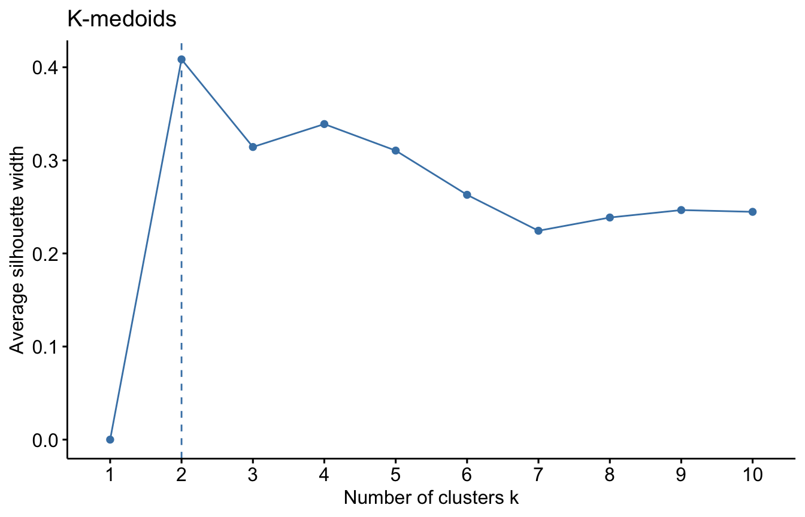
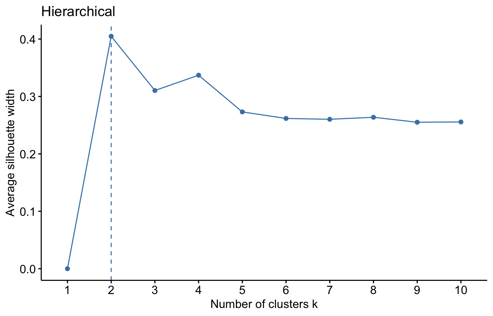

Chapter 4 workshop: K-means
This exercise involves the use of K-means and K-medoids (a robust alternative to K-means). We will understand the algorithm used to program K-means and understand how we can combine PCA with K-means clustering for visualization. At the end of the workshop, we will also understand why K-medoids is robust to outliers.
4.0.0.1 K-means (Iris data):
We will use the factoextra package for visualization. Recall that iris data set has a natural category for the species (three levels: Setosa, Versicolor, Virginica). We may want to ask how good our clustering is, for example, how does our new clusters compares with the natural grouping of the species.
- We first scale the data. (Why is this important?)
iris.scaled <- scale(iris[, -5])We can motivate the number of required clusters by plotting total within-cluster sum of square (wss) versus number of cluster. This can be accomplished using fviz_nbclust() function from the factoextra package
library(factoextra)fviz_nbclust(iris.scaled, kmeans, method = "wss") 
This Figure is treated the same way as we did with the scree plot. We locate the bend (knee) in the plot. This seems to be at k=3. So we will use three clusters for the analysis.
The model can be fitted as follows:
# Compute k-means with k = 3
set.seed(123)
km.res <- kmeans(iris.scaled, 3, nstart = 25)
names(km.res)## [1] "cluster" "centers" "totss" "withinss" "tot.withinss"
## [6] "betweenss" "size" "iter" "ifault"
Do you remember what nstart = 25 is? It means that R will try 25 different random initial cluster assignments and then select the best results corresponding to the one with the lowest within cluster variation.
km.res## K-means clustering with 3 clusters of sizes 50, 53, 47
##
## Cluster means:
## Sepal.Length Sepal.Width Petal.Length Petal.Width
## 1 -1.01119138 0.85041372 -1.3006301 -1.2507035
## 2 -0.05005221 -0.88042696 0.3465767 0.2805873
## 3 1.13217737 0.08812645 0.9928284 1.0141287
##
## Clustering vector:
## [1] 1 1 1 1 1 1 1 1 1 1 1 1 1 1 1 1 1 1 1 1 1 1 1 1 1 1 1 1 1 1 1 1 1 1 1 1 1
## [38] 1 1 1 1 1 1 1 1 1 1 1 1 1 3 3 3 2 2 2 3 2 2 2 2 2 2 2 2 3 2 2 2 2 3 2 2 2
## [75] 2 3 3 3 2 2 2 2 2 2 2 3 3 2 2 2 2 2 2 2 2 2 2 2 2 2 3 2 3 3 3 3 2 3 3 3 3
## [112] 3 3 2 2 3 3 3 3 2 3 2 3 2 3 3 2 3 3 3 3 3 3 2 2 3 3 3 2 3 3 3 2 3 3 3 2 3
## [149] 3 2
##
## Within cluster sum of squares by cluster:
## [1] 47.35062 44.08754 47.45019
## (between_SS / total_SS = 76.7 %)
##
## Available components:
##
## [1] "cluster" "centers" "totss" "withinss" "tot.withinss"
## [6] "betweenss" "size" "iter" "ifault"The total variability explained by the three clusters is 76.7 %
We can find the means of the four variables based on the newly created clusters (check the link on the function aggregate for more details). This can be used to evaluate the performance of the clusters that we obtained via K-means relative to the true class labels?
We can use the table() function in R to compare the true class labels to the class labels obtained by clustering.
aggregate(iris[,-5], by=list(cluster=km.res$cluster), mean)## cluster Sepal.Length Sepal.Width Petal.Length Petal.Width
## 1 1 5.006000 3.428000 1.462000 0.246000
## 2 2 5.801887 2.673585 4.369811 1.413208
## 3 3 6.780851 3.095745 5.510638 1.972340# compare K-means clustering to the true class labels
dd <- cbind(iris, cluster = km.res$cluster)
table(dd$Species,dd$cluster)##
## 1 2 3
## setosa 50 0 0
## versicolor 0 39 11
## virginica 0 14 36Setosa from our clustering completely agree with the original label of the species. All the 50 observations are correctly clustered. Out of the 50 observations from Versicolor, 39 agrees with the label while 11 observations are labeled as Virginca. 36 observations from Virginca are put in the correct cluster. Overall, 83.3% correct classification is obtained from the algorithm (((50+39+36)/150)*100).
# Visualize kmeans clustering
fviz_cluster(km.res, iris[, -5], ellipse.type = "norm")
(ii) Recall that in Workshop 1 (PCA), we used the function fviz_pca_biplot() to display PCA plot in two dimensions. The idea is that PCA is first performed on the data and K-means clustering is carried out on the first two principal component score vectors. Let’s do this with iris data and use fviz_cluster function to plot the resulting clusters
pr.out = prcomp(iris.scaled )
labels <- dd$Speciesplot( pr.out$x[,1], pr.out$x[,2], col=labels, pch=19, xlab = "PC1", ylab="PC2") Two components are retained as we did in PCA of iris data.
set.seed(123)
kmean.out = kmeans( pr.out$x[,c(1,2)], centers=3, nstart=25)
fviz_cluster(kmean.out, pr.out$x[,c(1,2)],
ellipse.type = "norm", xlab="PC1 (73%)", ylab="PC2 (22.9%)" )
4.0.0.2 K-medoids (Iris data):
K-medoids algorithm is a clustering approach related to K-means clustering for partitioning a data set into k clusters. In K-medoids clustering, each cluster is represented by one of the data point in the cluster. These points are named cluster medoids. Medoid corresponds to the most centrally located point in the cluster. While K-means takes the average (centroid) of the \(k^\text{th}\) cluster to minimize the total within cluster variation, K-medoids replaces this by an optimization step which restricts the search
space to the observations within the \(k^\text{th}\) cluster.
The main advantage of K-medoids over K-means clustering is that it is less sensitive to outliers (Can you think of why?). The most common K-medoids clustering methods is the PAM algorithm (Partitioning Around Medoids). We will use a faster implementation of PAM using the CLARA (Clustering Large Applications) function within cluster package in this workshop.
Other packages for K-medoids in R are kmedoids() function in clue package (Cluster Ensembles) and pamk() in fpc package.
The model is fitted as:
clara(x, k, metric="euclidean" stand=FALSE),
where:
x: data matrix or dissimilarity matrix
k: number of clusters
metric:
euclideanandmanhattandistancestand: if set to TRUE, the variables are scaled to have unit variance before the analysis takes place.
library(cluster)
iris.scaled <- scale(iris[, -5])
pam.res <- clara(iris.scaled, k=3)
names(pam.res)## [1] "sample" "medoids" "i.med" "clustering" "objective"
## [6] "clusinfo" "diss" "call" "silinfo" "data"We are more interested in medoids which shows the objects representing cluster than e.g. i.med which gives the ID of the three observations used as the center (remember we do not use centroid here) and clustering which gives a vector containing the cluster number of each object.
pam.res$medoids## Sepal.Length Sepal.Width Petal.Length Petal.Width
## [1,] -0.89767388 0.7861738 -1.27910398 -1.3110521482
## [2,] -0.05233076 -0.8198233 0.08043967 0.0008746178
## [3,] 0.79301235 -0.1315388 0.81685914 1.0504160307pam.res$i.med## [1] 40 83 148Observe that the observations IDs are the 40, 83 and 148 from the scaled iris data corresponds to the medoids shown above. You can easily check this as iris.scaled[c(40,83,148),]
The cluster for the observations can be obtained as:
pam.res$clustering## [1] 1 1 1 1 1 1 1 1 1 1 1 1 1 1 1 1 1 1 1 1 1 1 1 1 1 1 1 1 1 1 1 1 1 1 1 1 1
## [38] 1 1 1 1 2 1 1 1 1 1 1 1 1 3 3 3 2 3 2 3 2 3 2 2 2 2 2 2 3 2 2 2 2 3 2 2 2
## [75] 2 3 3 3 2 2 2 2 2 2 2 3 3 2 2 2 2 2 2 2 2 2 2 2 2 2 3 3 3 3 3 3 2 3 3 3 3
## [112] 3 3 2 3 3 3 3 3 2 3 3 3 3 3 3 3 3 3 3 3 3 3 3 2 3 3 3 3 3 3 3 3 3 3 3 3 3
## [149] 3 3As a small task, use the table() function in R to compare the true class labels to the class labels obtained by K-medoids clustering. Does this result offer any improvement over the K-means results obtained in the previous workshop?
table(iris$Species, pam.res$clustering)##
## 1 2 3
## setosa 49 1 0
## versicolor 0 37 13
## virginica 0 4 46If you obtained the correct answer, you will notice that Setosa from our clustering method misclassify 1 of the setosa specie as versicolar (49 out of 50 correctly classified). Virginca species got some improvement over the previous K-means results, only 4 observations are misclassified whereas 14 observations are misclasified in K-means. Overall, 88% ((49+37+46)/150*100) correct classification is obtained under K-medoids whereas 83.3% correct classification was obtained for K-means.
We can use the fviz_cluster function to visualize the clusters as before.
library(factoextra)
fviz_cluster(pam.res, iris[, -5], ellipse.type = "norm")
We show in the figure below that the medoids are indeed a data point whereas centroids are not.

4.0.0.3 Silhouette measure
Her we use the silhouette measure to determine optimal number of clusters for the USArrests dataset using the following three algorithms: K-means, K-medoids and Hierarchical clustering (with appropriate linkage). Here we use USArrests data set to apply the silhouette measure.
library(mclust)## Package 'mclust' version 6.0.0
## Type 'citation("mclust")' for citing this R package in publications.data("USArrests")
datUS <- scale(USArrests)
For each algorithm we will compute the overall average silhouette width of each number of clusters. The maximum of these values is the optimal number of cluster.



We used the Silhouette measure to select optimal number of clusters within a method (e.g. K-means). We can select the optimal number of cluster and algorithm using a general validation method implemented in the package. Read more about the clValid package .